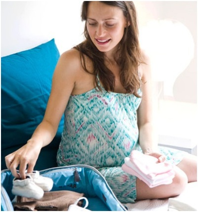
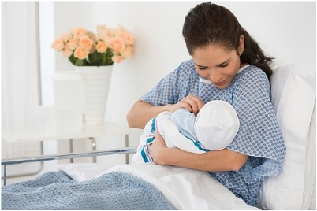
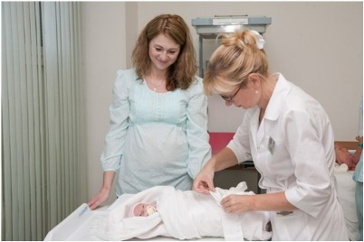

Что взять с собой в роддом

Примерно за 2-3 недели до родов проверьте, все ли Вы приготовили к родам для себя и к рождению, для малыша. Если Вы уже выбрали роддом или договорились с личным доктором, подробней узнайте список вещей, рекомендуемых в данном роддоме для мамы и для малыша. Некоторые роддома указывают, что необходимо взять с собой, другие выдают все хозяйское.
Нужные вещи сложите заранее в пакеты (именно в пакеты с ручками, не в сумки): пакет для мамы до родов, на роды, пакет после родов для мамы и малыша, пакет для мамы на выписку, пакет для малыша на выписку. Обязательно познакомьте с этими пакетами папу. Нередко случается ситуация, когда муж, собирая сумки жене в роддом, на радостях и от волнения все перепутал, и вместо третьего справа платья принес пятый сверху сарафан, а он уже не подходит - и настроение от встречи было сильно испорчено.
Милые дамы, не перегружайте своих мужей, им не всегда по силам такое пустяковое, казалось бы, задание – собрать вещи, позаботьтесь и о них!
Итак, что понадобится в роддоме?
Первый пакет – до родов и во время родов
Часто случается так, что в роддом вы попадаете еще до родов (начались схватки, но не сильные, плановое кесарево сечение). На этот случай в пакете у вас должно находится то, что потребуется вам как и в любой больнице – халат, ночная рубашка, резиновые тапочки, хлопчатобумажные и теплые носочки, но не шерстяные, телефон с зарядкой, принадлежности личной гигиены (зубная щетка, зубная паста, гель для душа (советую заменить жидким детским мылом, оно же пригодится потом и для малыша, а вещей у вас будет меньше), шампунь, мочалка, туалетная бумага, расческа, резинка для волос, зеркальце, полотенце (1 большое, 2 маленьких), посуда (чашка, тарелка, ложка/вилка), вещи для досуга (книга, телефон с зарядкой, плеер и др.), пакеты для грязного белья. Продукты питания при необходимости вам привезут родственники, возьмите лишь с собой чай, сахар, кипятильник, воду.
А теперь, что же помимо этого необходимо на время родов.
Обязательно ДОКУМЕНТЫ! А именно, обменная карта, паспорт, полис обязательного медицинского страхования, родовой сертификат.
Помимо этого, одноразовый станок, вода без газа, пакет с ручками (в него вы положите вещи, необходимые именно во время родов).
Из всего перечисленного, в тот момент, когда вас поведут уже в предродовую палату на подготовку к родам, а затем в родильный зал, вам необходимо взять с собой (в тот самый дополнительный пакет) большое полотенце, воду без газа, одноразовый станок, туалетную бумагу, заряженный телефон, одноразовые трусы (сетчатые), послеродовые прокладки (пару штук), гель для душа (или жидкое мыло), мочалку. Халат, ночную рубашку вы снимите и также положите в ваш пакет. На вас будет родовая сорочка.
У вас родился малыш! Поздравляем! Вот теперь вам потребуется второй пакет. Что в нем?
Все то, что было с вами в дородовый период, пригодится и в послеродовый, за исключением вашей ночной рубашки. Вплоть до выписки каждый день вас будут снабжать специальными рубашками, удобными для кормления малыша.
Помимо уже имеющихся вещей (их вам передадут из предродового отделения) вам необходимо иметь:
- Сетчаные трусы – 5-6 шт. (продаются в аптеках, одноразовые)
- Послеродовые прокладки – 1-2 упаковки (лучше взять с собой одну, потом при необходимости вам довезут вторую)
- Бюстгалтер для кормления (без косточек!)
- Вкладыши для груди – 1 упаковка (если будет течь молоко)
- Крем для сосков и детский крем (советую приобрести крем Бепантен – его можно применять и маме и малышу)
- Глицериновые свечи
- Блокнот/ручка
- Гигиеническая помада (губы после родов могут стать очень сухими)
Это что касается вас. А для вашего новорожденного малыша список вещей совсем небольшой, так как пеленками (в избыточном количестве) вас снабдят в роддоме, подгузники вероятнее всего не разрешат использовать (вам нужно будет следить за мочеискусканием и дефекацией вашего малыша, подгузники не дадут вам точной картины, сколько раз ваш малыш пописал.
Из вещей для малыша вам разрешат взять с собой чепчики (2-3 шт), носочки (2-3 шт, резинка на них не должна быть плотной), пустышка, царапки. Также вам понадобятся носовые платочки, полотенце для малыша (небольшое), крем (детский, Бепантен). Вот и все вещи!
Бутылочки вам не нужны. При необходимости вам дадут все в роддоме или привезут потом родственники. И никаких лекарств! Врачи сами назначат лечение вам и вашему малышу, если это потребуется.
А вот на выписку собираем третий пакет, в котором:
для вас:
- Одежда и обувь по сезону
- Косметика (не желательно использование лаков для волос. Не забывайте – вы не в салоне красоты, вы в роддоме)
- Фен часто бывает в роддоме, но можно взять и свой
для малыша:
- Комплект на выписку
- Подгузник (1 шт)
Папе и всем родственникам, кто будет присутствовать на выписке необходимо взять отличное настроение, море улыбок, цветы для мамы и сотрудников роддома.